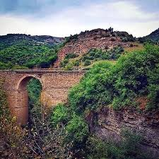

Tabasaran ist eine Teil vom Dagestan, befindet sich ganz am Süden, bei der Grenze Aserbeijans.
Tabasaran hat 150 000 bewoner und eigene Sprache, die Sprache gehört zu die schwerigsten Sprachen der Welt mit 52 Kasusen
Tabasaran ist die schönste Region des Dagestans, mit Bergen und Wüsten ist Tabasaran sehr unterschidlich
Schaferei und Landwirt ist die wichtigste teil der Aufgaben, noch die Weberei, Tabasaranische teppiche ist sehr beliebt auf der Welt
Religion der Tabasaranen ist Islam ( suniten95%, schiiten 5%),
Geselschaft ist in Tabasaran sehr traditionell
Dagestan ist eine Republik, seit 1991 ist Teil des Russlands.
Im Dagestan wohnen mehr als 40 verschiedene Völker, mit eigenen Sprachen